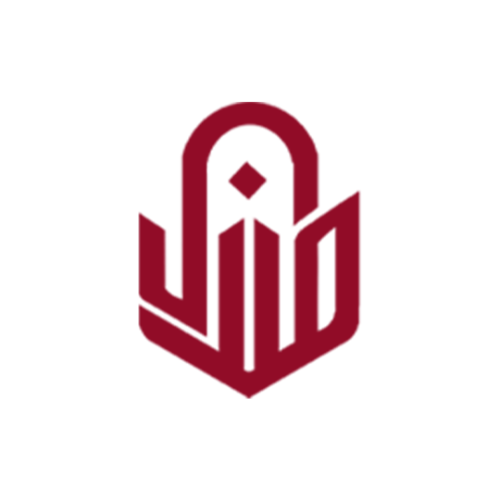
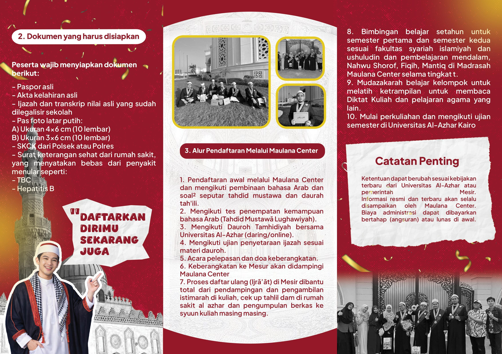
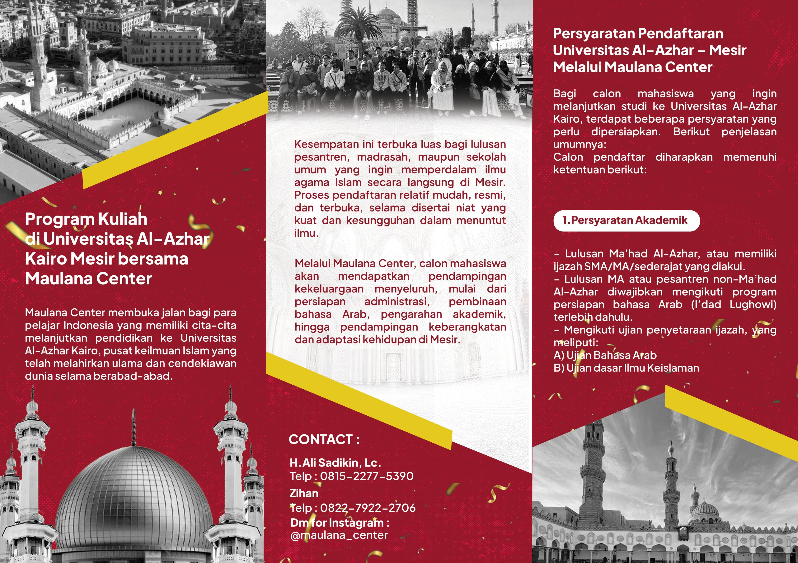
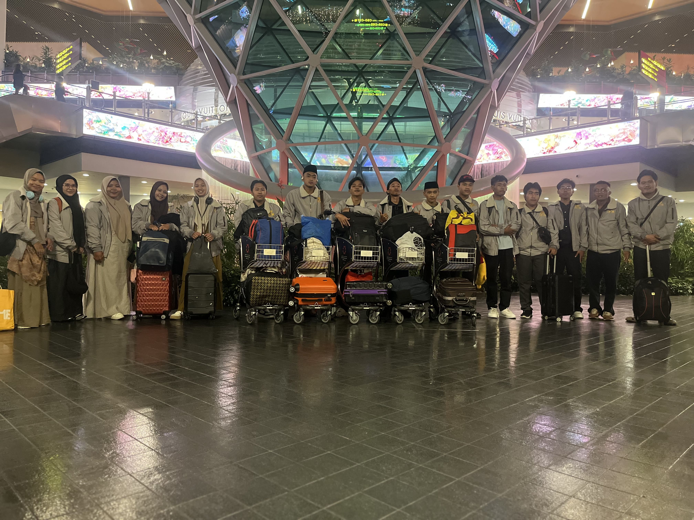
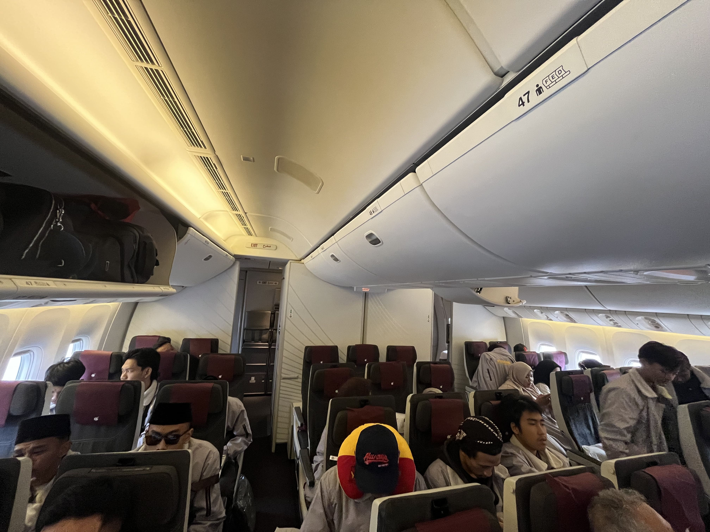
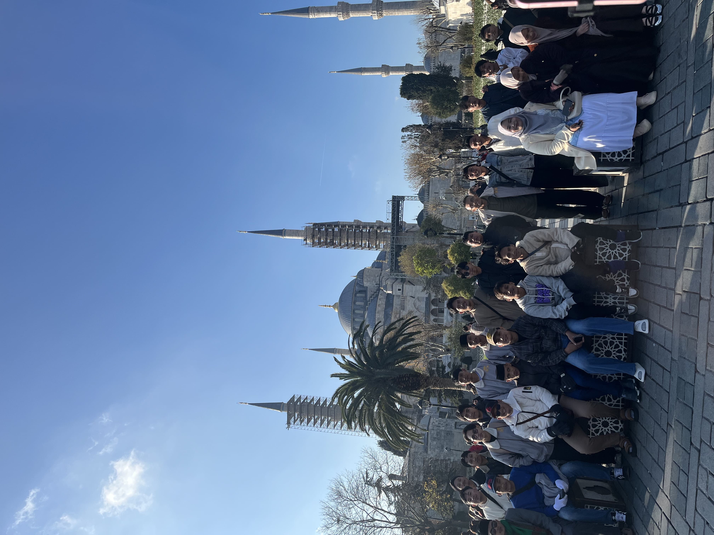
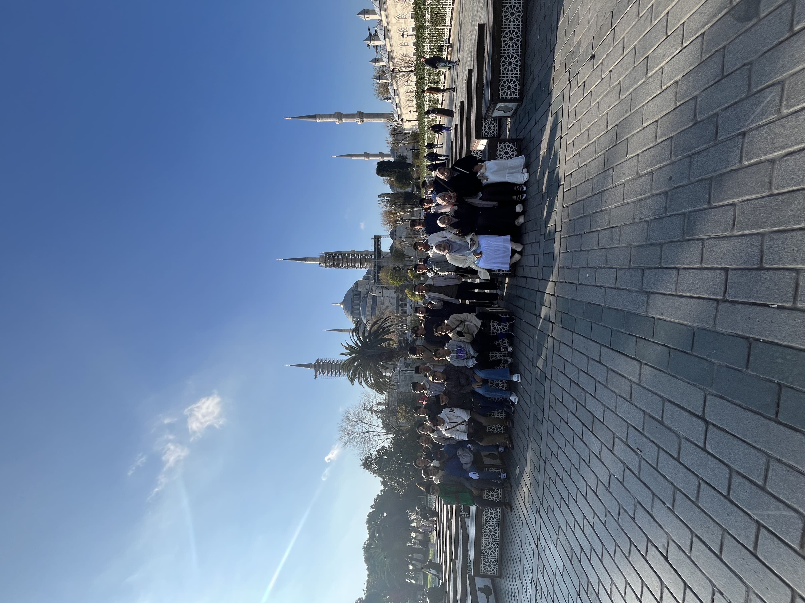

Arah Pendampingan
Kami merancang pengalaman pendampingan yang matang sejak konsultasi awal, persiapan akademik, kelengkapan berkas, hingga kesiapan keberangkatan. Seluruh komunikasi dibuat jelas dan menenangkan, agar santri, mahasiswa, dan orang tua merasa yakin di setiap tahap.
Profil Singkat
Jejak kontribusi yang membuat keluarga merasa aman menitipkan masa depan.
Maulana Center hadir bukan sekadar sebagai penyedia informasi, tetapi sebagai partner pendamping yang membantu meminimalkan kebingungan, memperjelas proses, dan mengantar calon mahasiswa menuju Cairo dengan persiapan yang lebih matang.
Tahun Berdiri
Dimulai dari pendampingan kecil yang berfokus pada kesiapan studi dan adab keberangkatan.
Pendiri
Aktif merancang sistem pendampingan yang tenang, disiplin, dan mudah dipahami orang tua.
Santri Diberangkatkan
Melalui alur administrasi, pembekalan, dan koordinasi yang terus diperbaiki dari tahun ke tahun.
Area Sebaran Alumni
Alumni tersebar di berbagai lingkungan belajar dan komunitas mahasiswa Indonesia di Mesir.
Jaringan di Mesir
Relasi pendampingan membantu adaptasi awal dan koordinasi kebutuhan saat baru tiba di Mesir.
Didesain untuk memberi rasa tenang sejak sebelum berangkat.
Orang tua biasanya tidak hanya mencari informasi, tetapi juga mencari kepastian bahwa anaknya didampingi oleh pihak yang berpengalaman, komunikatif, dan memahami kultur belajar di Al-Azhar.
Karena itu, pendekatan kami berfokus pada kejelasan ritme, kesiapan dokumen, pembekalan mental, serta standar komunikasi yang membuat keputusan terasa lebih aman.
“Pendampingan yang baik bukan hanya mengantar berangkat, tetapi menyiapkan hati, ilmu, dan arah.”
Prinsip kerja Maulana Center
Program Unggulan
Rangkaian program yang menyatukan persiapan akademik, administrasi, dan mental keberangkatan.
Setiap program disusun untuk menjawab kebutuhan calon mahasiswa yang berbeda. Ada yang butuh penguatan bahasa, ada yang perlu didampingi dari nol, dan ada yang ingin sistem lengkap sampai keberangkatan.
01
Program Intensif Al-Azhar Track
Pembinaan terfokus untuk pemetaan kesiapan, pembekalan pola belajar, dan latihan akademik sebelum masuk lingkungan studi di Mesir.
02Kelas Bahasa Arab Persiapan
Penguatan bahasa Arab dengan orientasi akademik agar mahasiswa tidak kaget ketika masuk ritme kuliah dan talaqqi.
03Mentoring Berkas & Registrasi
Pemeriksaan dokumen, timeline administrasi, dan pendampingan detail untuk meminimalkan kesalahan di tahap yang paling sensitif.
04Pendampingan Orang Tua
Sesi penjelasan dan konsultasi khusus agar keluarga memahami tahap keberangkatan, biaya, dan ritme adaptasi di Mesir dengan jernih.
Alur Proses
Proses yang rapi membuat keputusan besar terasa lebih ringan dijalani.
Kami membagi perjalanan menuju Al-Azhar menjadi tahap yang jelas, agar semua pihak tahu apa yang sedang dikerjakan, kapan harus siap, dan bagaimana kualitas kesiapan dijaga.
1
Konsultasi Awal
Memetakan latar belakang siswa, target studi, kesiapan keluarga, dan jalur pendampingan paling tepat.
2
Audit Kesiapan
Menilai dokumen, level bahasa, ritme belajar, dan area yang perlu dikuatkan sebelum proses dilanjutkan.
3
Pembinaan Program
Masuk ke program yang sesuai, dibimbing melalui jadwal belajar, simulasi, dan konsultasi berkala.
4
Pengurusan Berkas
Pengumpulan, validasi, dan finalisasi dokumen dengan checklist yang rapi untuk meminimalkan revisi.
5
Keberangkatan
Pembekalan akhir, koordinasi perjalanan, dan pendampingan transisi awal saat tiba di Mesir.
Testimoni
Kepercayaan tumbuh dari pengalaman nyata yang dirasakan siswa dan keluarganya.
Kami menjaga kualitas bukan hanya pada hasil, tetapi juga pada pengalaman proses. Itu sebabnya komentar yang muncul paling sering adalah: jelas, tenang, dan terasa didampingi.

“
Saya paling terbantu karena prosesnya tidak membingungkan. Dari awal sudah diberi gambaran yang realistis, tahapan berkasnya jelas, dan komunikasi ke orang tua juga sangat rapi.
Ahmad Rifqi
Mahasiswa Al-Azhar, asal Jawa Barat

“
Sebagai orang tua, saya tenang karena semua dijelaskan dengan bahasa yang mudah. Kami tahu apa yang harus disiapkan, kapan waktunya, dan siapa yang bisa dihubungi saat ada pertanyaan.
Ibu Rina Mardiyah
Wali mahasiswa angkatan 2025

“
Programnya terasa serius tapi tidak menegangkan. Saya justru lebih percaya diri karena tahu apa yang sedang saya kejar dan tahap mana yang harus saya prioritaskan terlebih dahulu.
Fauzan Hilmi
Peserta program intensif persiapan Mesir
Galeri
Suasana visual yang mendekatkan calon mahasiswa dengan atmosfer tujuan mereka.
Galeri ini dirancang untuk memunculkan rasa dekat dengan lingkungan belajar, budaya, dan perjalanan menuju Mesir secara elegan, bukan sekadar dekoratif.

Semangat keberangkatan yang terasa dekat
Momen awal yang memperlihatkan antusiasme, kebersamaan, dan kesiapan menuju perjalanan studi.

Pendampingan yang terasa nyata
Kebersamaan yang dibangun membantu proses terasa lebih terarah.

Langkah awal yang penuh keyakinan
Suasana kegiatan yang memperlihatkan proses persiapan dijalani dengan lebih yakin dan terarah.

Kebersamaan yang menguatkan langkah
Interaksi yang hangat membuat proses pendampingan terasa lebih dekat bagi calon mahasiswa dan keluarga.

Ritme persiapan yang lebih matang
Setiap pertemuan dirancang untuk membangun kesiapan yang terasa lebih tertata dan mantap.

Perjalanan yang dimulai bersama
Dokumentasi ini menangkap suasana yang hangat sebagai langkah awal yang dipenuhi harapan, arah, dan rasa percaya diri.
Call To Action
Siap Berangkat ke Universitas Al-Azhar?
Jadwalkan konsultasi awal dan mulai perjalanan dengan peta yang jauh lebih jelas, proses yang rapi, serta pendampingan yang membuat keluarga merasa mantap.
Kontak
Terhubung dengan tim yang komunikatif, ramah, dan siap menjawab dengan jelas.
Untuk keluarga yang ingin memastikan program, timeline, atau estimasi tahapan yang sesuai, kami menyiapkan jalur komunikasi yang cepat namun tetap profesional.
Konsultasi yang nyaman untuk siswa dan orang tua.
- Respons konsultasi terjadwal dengan penjelasan yang sistematis dan mudah dipahami.
- Informasi program, persyaratan, dan biaya dijelaskan dengan bahasa yang jernih.
- Pendampingan awal dapat dimulai lewat WhatsApp, panggilan, atau sesi tatap muka terjadwal.
Maulana Center Indonesia
Konsultasi awal, pemetaan program, dan briefing orang tua tersedia melalui komunikasi yang tertata dan profesional.
- WhatsApp: +62 812 3456 7890
- Email: info@maulanacenter.id
- Jam layanan: Senin - Sabtu, 08.00 - 20.00 WIB